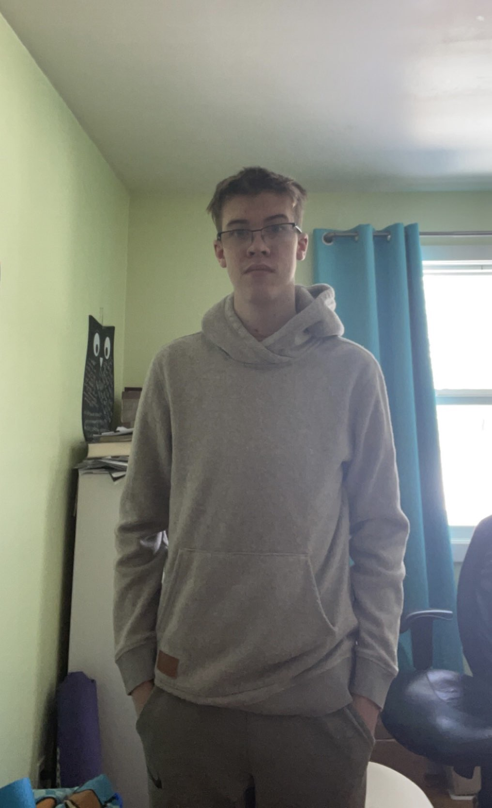

I'm Sebastien Watt, born in Winnipeg Manitoba, a PTEC student in grade 10 who loves to code and learn new things. Some of the languages I know and expanding my knowledge on are HTML, CSS, C#, python and C.
You can find everything you need to know about me and how I continue to grow as a website devoloper on this website.